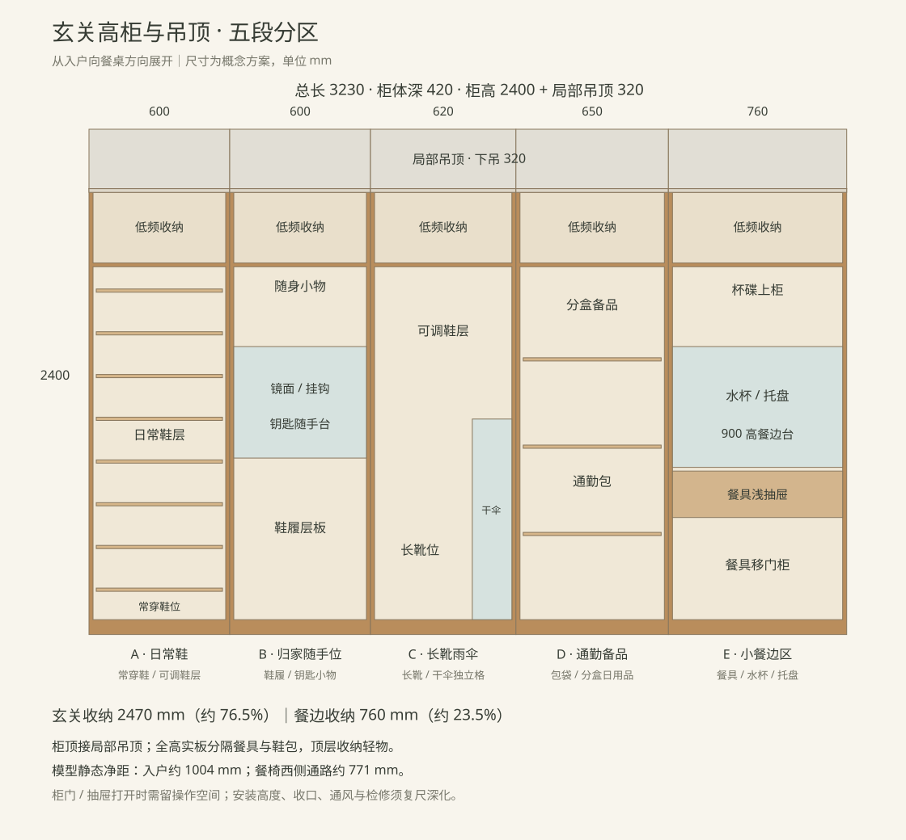

继续后使用 WASD 行走，拖动画面转头。
v4 新增第一人称漫游：点击“进入漫游”，WASD 移动，拖动画面或启用鼠标自由转头，方向键也可转头；Esc 暂停。手机可用屏幕方向按钮并拖动转头。视高 1.60 m，按模型墙体、柜体及家具设置碰撞边界；房间菜单可快速到达，当前位置无路时可回到入户。当前餐椅位置让厨房入口偏窄，保守碰撞范围下可用房间菜单直接进入厨房。漫游采用同层行走，不模拟楼梯、跳跃或柜门开合。
v3：入户左侧整排柜体改为 2400 mm 高柜，上方补局部吊顶，3230 mm 总长中保留 2470 mm 玄关收纳、760 mm 餐边区。厨房仍无吊柜，客卫仍为 CAD 三角台面。可打开“查看柜内分区”检视柜内结构，或打开“动线与静态净距”查看本版尺寸。
柜体深 420 mm，门板与把手另占约 46 mm；含 20 mm 顶封板共高 2400 mm；上方 320 mm 局部吊顶衔接至假定的 2720 mm 原顶。餐边区与鞋包用全高实板分开，下部采用移门。顶层收低频物品，归家凹位放钥匙和小物，雨伞需先沥水再归位。
打开玄关分区与尺寸图 ↗

净距对应模型里的静态摆放；柜门、抽屉和洗碗机开启时仍占用操作空间。床尾浅柜使用正向抽拉挂衣；容量与五金待实际产品确认。
平面依据 2026-10-29 提供的 PDF 与对应 DWG。墙体、门窗平面位置以当前 CAD 方案为基准；家具按图面占位重建。整体风格参考业主的装修需求：中古 / 包豪斯、木色、不锈钢与暖白。
当前为全屋 v4 概念方案；同日水槽下四设备专项尚未合入本模型。Three.js 采用 MIT 许可，随交付保留许可证。